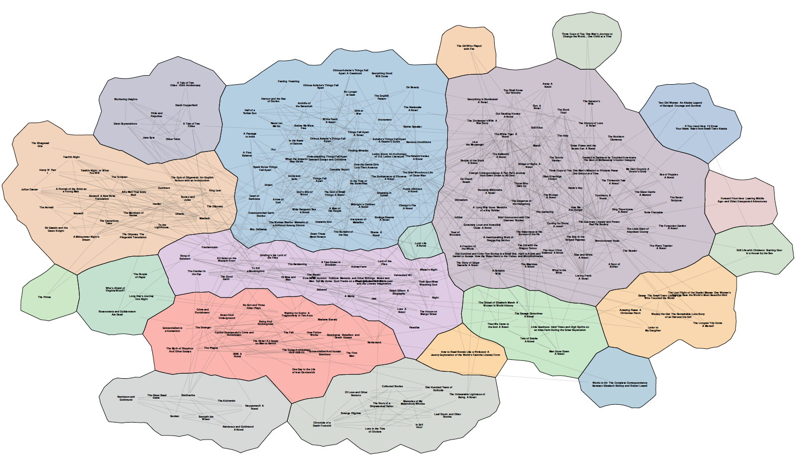

Investigating the Effectiveness of Large Network Visualizations
Although task taxonomies are available for network visualizations, none specifically deal with the visualization of clustered networks. Clustered networks, i.e., networks where nodes are grouped based on a priori knowledge or structural properties, are fairly common (e.g., communities in social networks, or co-activated proteins in protein-protein interaction networks). In our work, we first defined a list of 31 group-level tasks both from studying the user interaction with network visualizations from interviewing experts in the field. We then divided these group-level tasks into four subcategories according to the information required to solve them. After designing our taxonomy, we compared the effectiveness of three different types of network visualizations (Node, Node-Link, Node-Link-Group visualizations). While the three visualization types look different and have different characteristics, they all represent the same relational dataset. We assessed these three types of network visualization with a controlled experiment that covers different tasks. Results of our analysis indicated that Node-Link-Group visualizations are significantly faster and more accurate than other two types of network visualizations for group-based tasks. This finding is really important since it contradicts results in other studies, in similar but subtly different settings.

We then conducted an experiment to assess how well people memorize the underlying data represented in two different network visualizations of the same relational data: Node-Link and Node-Link-Group visualizations. Our experiment can be summarized in three phases. In phase 1, human subjects were simply instructed to look at two types of visualizations for as long as they wanted. In phase 2, human subjects were asked to perform six different tasks while the visualization corresponding to each task was provided below the description of the task. In phase 3, the subjects were first verbally reminded of the two visualizations that they worked with. We then asked the participants to perform nine tasks. We removed the visualizations and we expected the participants to perform the tasks using their recollection of the visualizations that they worked with before. The main result of our study is that human subjects who used Node-Link-Group visualizations had significantly more accurate recall than those who used Node-Link visualizations.
In a different study, we designed a novel model for measuring enjoyment in data visualizations. Our proposed model suggests that enjoyment in information visualization encompasses six different elements (Challenge, Focus, Clarity, Feedback, Control, and Immersion), to measure enjoyment evaluations must control as many of these elements as possible. To test our proposed model, we conducted an experiment with human subjects to study the enjoyment of node-link and node-link-group visualization types. In our experiment, human subjects were asked to perform three different sets of tasks (node-based, network-based and group-based) using the Node-Link and Node-Link-Group visualizations with different sizes, densities and datasets. The tasks and visualizations were presented in a random order. Software guided the participants through the experiment by providing task instructions. In order to measure the level of enjoyment of performing each specific set of tasks using each visualization, after performing each set of tasks we asked questions about different elements of our proposed enjoyment model. For example, we asked participants to select how distractive they feel the visualization was by selecting a number from -2 (very distractive) to 2 (not distractive at all). Overall, our results indicated that Node-Link-Group visualizations are more enjoyable than Node-Link visualizations. Specifically, our findings indicate that people felt that challenges in the Node-Link-Group visualizations matched their skills significantly better than in the Node-Link visualizations. They also felt that it was significantly easier to follow the progress while working with Node-Link-Group visualizations. Finally, participants believed that Node-Link-Group visualizations were significantly more immersive than node-link visualizations.